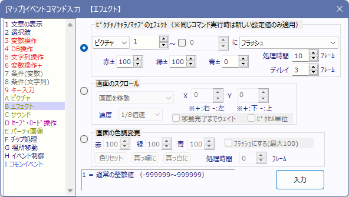

イベントコマンド 【エフェクト】
キャラクターやピクチャ・マップに対してエフェクトをかけたり、画面のスクロールや色調変更を行うことができます。

【各機能の説明】
・キャラ・ピクチャ・マップのエフェクト
キャラ・ピクチャ・マップに対して、それぞれ以下の処理を行うことができます。このコマンドによって変化した値は、「変数操作＋」などでの数値取得時には考慮されませんので、注意してください。
- ピクチャに対するエフェクト （□〜□ の欄にピクチャ番号を指定してください）
※ピクチャに対するエフェクトは、「ピクチャ」処理で指定した内容とは独立して処理されます。
+ フラッシュ … 指定した赤・緑・青の値をピクチャの「カラー」に加算してフラッシュします。
±200までの値に対応。
+ シェイク … 指定したX、Yの移動分で、指定回数だけピクチャを揺らします。
「処理時間」フレームが短いほど、高速に振動します。
+ 座標シフト … 指定したX、Y値だけ、ピクチャの描画座標をずらします。
+ カラー補正 … 指定した赤・緑・青の値だけピクチャの「カラー」に加算します。
±200までの値に対応。
+ ズーム … 指定したX、Y座標を中心に、指定した拡大率でピクチャをズームします。
+ 点滅A[明滅] … 指定したRGB分（最大±200）の差だけ、指定フレームでカラー変更による明滅（変化前、変化後、と交互に変化する）を繰り返します。
「RGB値全てを０に設定する」か、または「フレーム数を０にする」と、点滅は停止します。
+ 点滅B[自動ﾌﾗｯｼｭ] … 指定したRGB（最大±200）の±分だけ、指定フレームでカラー変更によるフラッシュ（ウェイトせずに変化してから元に戻っていく）を繰り返します。
「RGB値全てを０に設定する」か、または「フレーム数を０にする」と、点滅は停止します。
+ 自動拡大縮小[％] … 指定した縦・横の拡大率の±値分だけ、指定フレームでピクチャを拡大縮小します。
1回の拡縮後、休フレームだけ一時停止します。「鼓動」をイメージすると分かりやすいと思います。
+ 自動ﾊﾟﾀｰﾝ切替[1回] … 指定した開始パターン〜終了パターンまで、パターン番号を1ずつ指定フレーム間隔で切り替えます
一回分のパターン切り替えが終わったら、ピクチャ側で設定された元のパターン番号に戻ります。
+ 自動ﾊﾟﾀｰﾝ切替[ループ] … 指定した開始パターン〜終了パターンまで、パターン番号を1ずつ指定フレーム間隔で切り替えます
終了パターンまで切り替わったら、また開始パターンに戻ってループします。
+ 自動ﾊﾟﾀｰﾝ切替[往復] … 指定した開始パターン〜終了パターンまで、パターン番号を1ずつ指定フレーム間隔で切り替えます
終了パターンまで切り替わると、開始パターンまで1ずつ戻り、ループします。
※ピクチャのエフェクトによる補正は、ピクチャそのものの処理とは独立して処理されます。
たとえば「座標シフト」を行うと、「ピクチャ処理で指定したX、Y座標＋座標シフト分のX、Y座標」に
描画され続けます。これは座標シフト分のX、Y値を0に戻すか、ピクチャを消去するまで有効です。
※「フラッシュ」や「色調の加算」は、「ピクチャ」処理時のカラー 「0〜200」の範囲を超えて
色調が変わることはありませんので、注意してください。
- キャラに対するエフェクト
+ フラッシュ … 指定した赤・緑・青の値を加算してフラッシュします。±100までの値に対応。
マイナスの値を入れると暗くなります。-100,-100,-100で真っ黒に。
+ シェイク … 指定したX、Yの移動分で、指定回数だけキャラクターを揺らします。
「処理時間」フレームが短いほど、高速に振動します。
+ 点滅A[明滅] … 指定したRGB分の差だけ、指定フレームで明滅（変化前、変化後、と交互に変化する）を繰り返します。
「RGB値全てを０に設定する」か、または「フレーム数を０にする」と、点滅は停止します。
+ 点滅B[自動ﾌﾗｯｼｭ] … 指定したRGB分の差だけ、指定フレームでフラッシュ（ウェイトせずに変化してから元に戻っていく）を繰り返します。
「RGB値全てを０に設定する」か、または「フレーム数を０にする」と、点滅は停止します。
- マップに対するエフェクト
+ ズーム … 指定したX、Y座標を中心に、指定した拡大率でマップ、イベント、
プレイヤーキャラ、仲間キャラ、背景、フォグのズームを行います。
元の状態に戻す場合は、拡大率を100％にしてコマンドを実行してください。
※ただし、拡大率は100％以上の値にしてください。100％未満にすることも可能ですが、
本来100％で描画される範囲の外は真っ黒になってしまったり、ループの逆側のチップが
1マス分描画されてしまったりします。処理速度を維持する都合上、この現象への対処は
行いませんので、ご了承下さい。この現象をカバーして開発なさる分には構いません。
※また、拡大率を100％以上にした場合、主人公が画面の端に行った場合に見切れて
主人公が見えなくなりますが、マップのズームとしてはこれで正常な仕様です。
拡大したままプレイさせる場合は、マップの端の方を通行不能にするなどの工夫が必要です。
+ シェイク … 画面を揺らします。揺れの種類は、「縦揺れ・横揺れ・揺れを止める」から選択可。
「揺れの強さ」と「揺れの速さ」が設定可能で、「揺れの強さ」は一度の揺れ幅の
大きさを表し、「揺れの速さ」は一度の揺れが起きる時間の早さを表します。
共に、値が大きくなるほど揺れが激しくなります。
・画面のスクロール
画面をスクロールさせます（画面の中心をずらす）。ここでは以下の4種類の指定ができます。
- 画面を移動 … 画面をX、Yの数値ボックスに指定したチップ数だけスクロールさせます。なお、X､Yの数値ボックスには変数も指定可能です（例：2000000と入力すれば通常変数0番の値が読み込まれます）
- 主人公に戻す … 主人公の場所が中心になるようスクロールを戻します。
- スクロールをロック … 以後、画面をスクロールさせないようにします。
- ロック解除 … スクロールのロックを解除します。ただし、解除しても自動で主人公中心になったりはしないので、たいていの場合はこの後「主人公に戻す」を使う必要があるでしょう。
なお、「移動完了までウェイト」をオンにしているとスクロール処理が終わるまでイベント処理を進めずに待機します。
・色調変更
画面内のRGB（赤・緑・青）それぞれの色調を変化させます。0が最小値で、200が最大値、100が通常の値です。「フラッシュにする」をチェックすると、フレーム数の間だけその色で画面を光らせます。
- 色リセット … 色を全て100に戻します。
- 真っ暗に … 色を0、0、0にします。これで色調変更やフラッシュを行うとブラックになります。
- 真っ白に … 色を200、200、200にします。これで色調変更を行うと白っぽく、フラッシュは完全なホワイトになります。